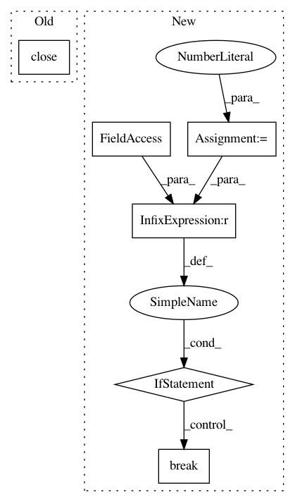

db41aef67c8bdea3a432aa7184be0d2d0636a7a8,slips.py,,,#,56
Before Change
outputProcessQueue.put("20|main|Started input thread [PID {}]".format(inputProcess.pid))
profilerProcessQueue.close()
outputProcessQueue.close()
After Change
// In each interval we check if there has been any modifications to the database by any module.
// If not, wait this amount of intervals and then stop slips.
// We choose 6 to wait 30 seconds.
minimum_intervals_to_wait = 6
while True:
// Sleep
time.sleep(check_time_sleep)
// Get the amount of modified time windows in the last interval
TWModifiedforProfile = __database__.getModifiedTWLogs()
amount_of_modified = len(TWModifiedforProfile)
// If there were no modified TW in the last timewindow time, then start counting down
if amount_of_modified == 0:
//print("Counter to stop Slips. Amount of modified timewindows: {}. Stop counter: {}".format(amount_of_modified, stop_counter))
if minimum_intervals_to_wait == 0:
// Stop the output Process
print("Stoping all processes after ")
// Stop the modules that are subscribed to channels
__database__.publish_stop()
// Send manual stops to the process not using channels
logsProcessQueue.put("stop_process")
outputProcessQueue.put("stop_process")
break
minimum_intervals_to_wait -= 1
else:
minimum_intervals_to_wait = 0
In pattern: SUPERPATTERN
Frequency: 3
Non-data size: 6
Instances
Project Name: stratosphereips/StratosphereLinuxIPS
Commit Name: db41aef67c8bdea3a432aa7184be0d2d0636a7a8
Time: 2020-02-29
Author: eldraco@gmail.com
File Name: slips.py
Class Name:
Method Name:
Project Name: tensorlayer/tensorlayer
Commit Name: f2073333b710a340403843763ba60eb1e6699916
Time: 2019-04-11
Author: rundi_wu@pku.edu.cn
File Name: examples/data_process/tutorial_tfrecord2.py
Class Name:
Method Name:
Project Name: rlworkgroup/garage
Commit Name: 02076981cd07b2aeee44e57bb6d19b0195426a9a
Time: 2019-11-27
Author: gitanshusardana@gmail.com
File Name: examples/step_dm_control_env.py
Class Name:
Method Name: